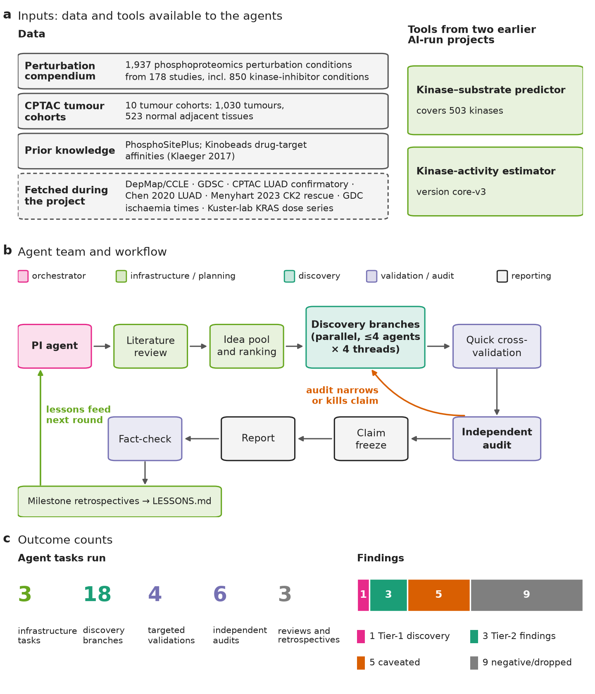
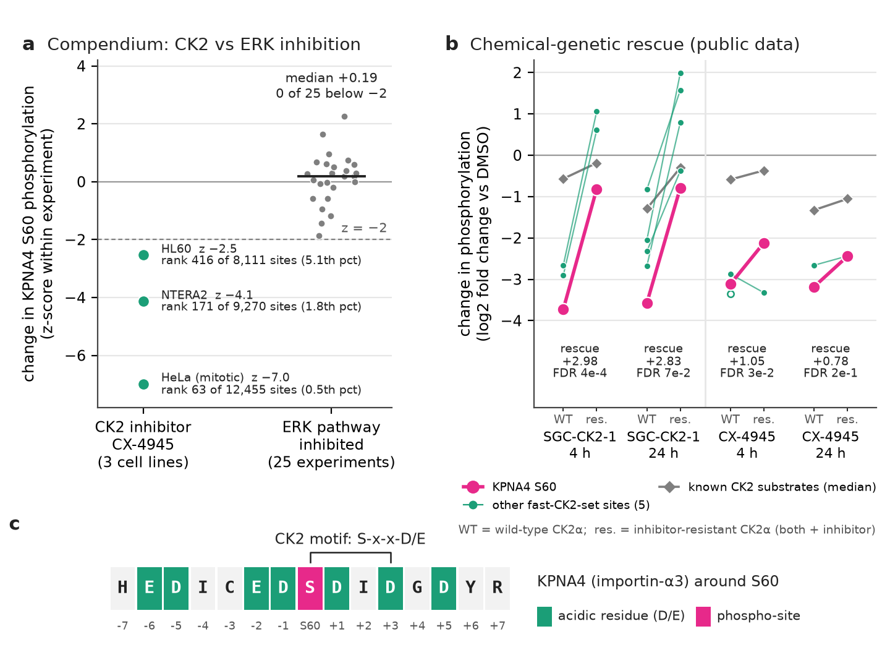
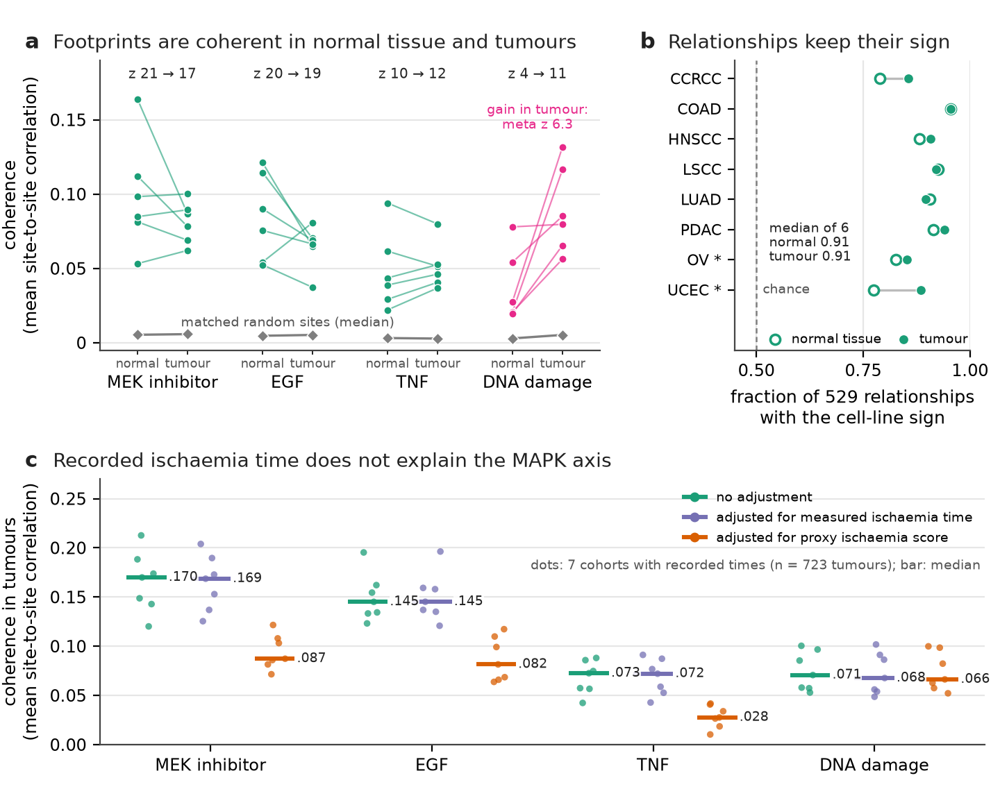
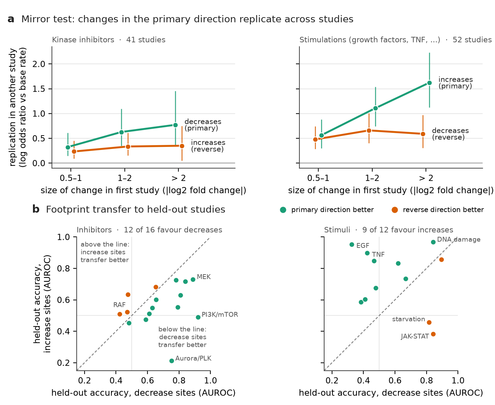
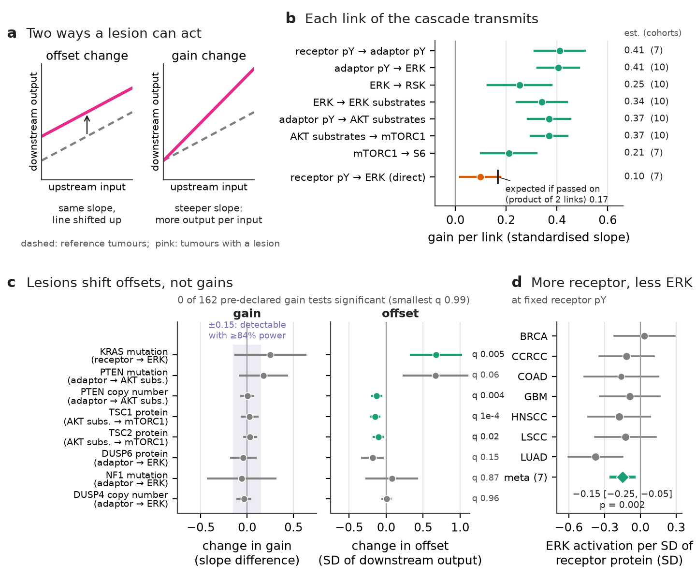
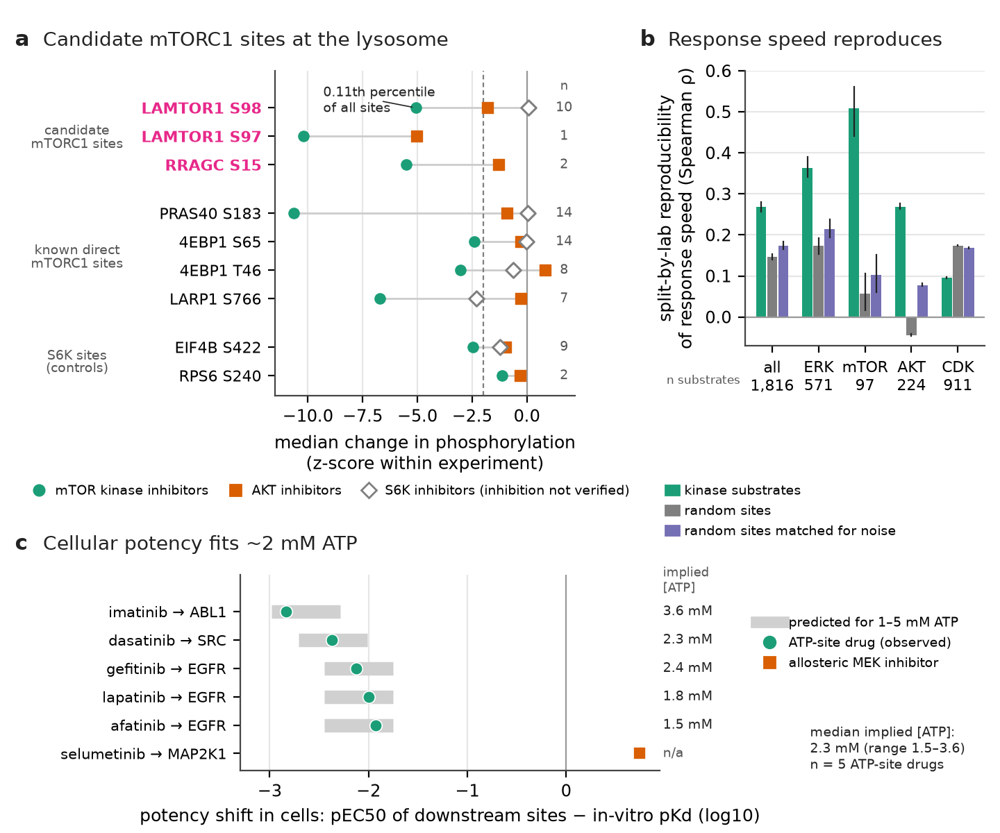
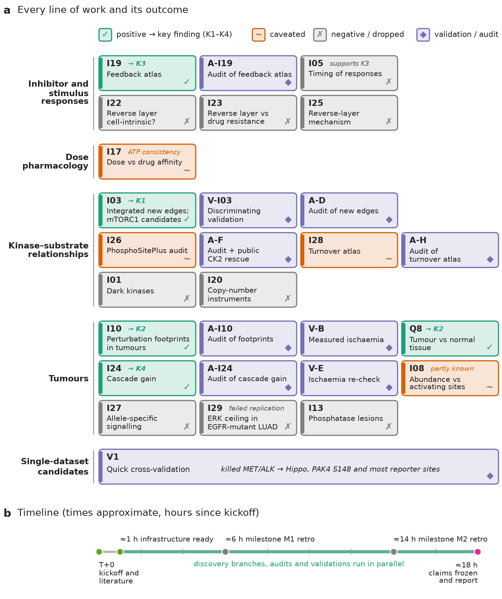
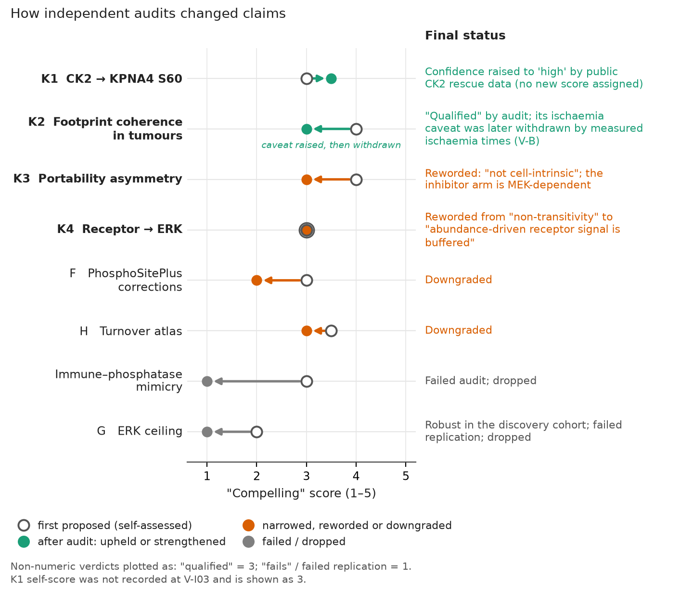

One corrected kinase–substrate assignment, three qualified findings, and many honest negatives
Research briefing, 30 October 2026. This document was written by the AI "principal investigator" (PI) agent (Claude Opus 5.5) that ran the project. All analyses, code and text were produced by AI agents. No result has yet been checked by a human scientist. Read it as an exercise in agentic science, and treat every biological claim as a hypothesis until it is independently verified.
The brief. We asked whether a team of AI agents, given a human-written brief, published phosphoproteomics data and two kinase-analysis tools built by earlier AI-run projects, could make novel and compelling discoveries about kinase signalling. A lead agent (the "PI") ran the work over about 18 hours on a shared compute node. It wrote the plan, launched sub-agents for individual analyses and kept the research record. It also sent the main candidate claims to independent auditor agents who tried to break them; some components were never audited, and we say which.
What was done. The PI ran:
The data were:
What survived scrutiny. We label the four findings K1–K4 throughout.
What we learned about agentic science.
Cells pass information through protein kinases, enzymes that attach phosphate groups to specific amino acids (serine, threonine or tyrosine; the modified residues are written pS, pT, pY) on other proteins, their substrates. A single modified residue, for example serine 60 of KPNA4, is a phosphosite, written KPNA4 S60. Humans have about 500 kinases and well over 100,000 known phosphosites, but for fewer than 5% of sites do we know which kinase is responsible (Needham et al. 2019).
Phosphoproteomics uses mass spectrometry to measure thousands of phosphosites at once. Comparing a treated sample with a control gives a log2 fold change for every site: +1 means doubled, −1 means halved. Because kinases are hard to measure directly, their activity is usually inferred from the behaviour of their known or predicted substrates (Hernandez-Armenta et al. 2017; Müller-Dott et al. 2025).
Kinase signalling is central to cancer and to many drugs, so new, reliable statements about which kinase controls which site, or how signalling pathways behave in human tissue, are useful to many researchers.
A human researcher gave the PI agent a short brief (reproduced verbatim in PROMPT.md): make several novel and compelling discoveries about kinase signalling; review the literature first; borrow ideas from other fields; rank results by how compelling, novel and promising they are; keep a research tree and a list of process lessons.
Data provided:
Tools. Two tools came from earlier AI-run projects in the same exercise:
Both projects documented limitations that we carried forward. Above all, the activity estimator cannot reliably distinguish kinases within the same family (for example ERK1 from ERK2), and tyrosine-kinase predictions are weak.
Public data fetched during the project:

Figure 1. The project at a glance. (a) Inputs: public data and two tools from earlier AI-run projects. (b) How the agent team worked: the PI agent moved ideas from literature review through parallel discovery branches, quick cross-validation and independent audit to a frozen, fact-checked report. Audits narrowed or killed claims, and milestone retrospectives fed process rules (LESSONS.md) back into the next round. (c) Number of agent tasks of each kind, and how the results divided: 1 Tier-1 discovery, 3 Tier-2 findings, 5 caveated observations and 9 negative or dropped discovery branches.
The PI agent (Claude Opus 5.5) did not run analyses itself, apart from a few quick checks. It:
RESEARCH_TREE.md), and maintained a list of process rules (LESSONS.md).Each sub-agent owned its own folders, started from a written brief, and returned a one-page summary with effect sizes, controls, a literature check and a self-score.
Resources. The node had 64 cores, 375 GB of memory and 4 GPUs, shared with other users. Following a standing instruction from the human researcher, the team used at most a quarter of it: 16 threads, about 94 GB of memory, and in practice no GPU. Usually four sub-agents ran at once with four threads each.
Human involvement during the run. None, beyond the brief and a few questions at the end. One request to the human, for access to a restricted dataset (decryptM 2.0), went unanswered, and the work continued without it.
| Term | Meaning |
|---|---|
| Phosphosite (e.g. KPNA4 S60) | A specific serine (S), threonine (T) or tyrosine (Y) residue of a protein that can carry a phosphate |
| Activation loop | A segment of a kinase whose phosphorylation switches the kinase on; often used as a readout of activity |
| log2 fold change | Change relative to control on a log2 scale (+1 = doubled, −1 = halved) |
| z-score | A change expressed in standard deviations relative to other sites in the same experiment |
| AUROC | Probability that a true case ranks above a non-case (0.5 = chance, 1 = perfect) |
| FDR / q-value | False discovery rate: expected fraction of false positives among results called significant |
| Meta-analysis, meta z | Combining estimates from several cohorts or studies into one estimate and z-score |
| Principal components (PCs) | The largest shared patterns of variation across all sites; removing them strips global effects (and some biology) |
| Coherence | How strongly a set of sites co-vary across samples, compared with matched random sets |
| Matched null | Random sites chosen to resemble the tested sites (coverage, variability, residue type) |
| Pre-registration | Writing down hypotheses and tests before looking at outcomes |
| Chemical-genetic rescue | Expressing a drug-resistant kinase to test whether a drug's effect runs through that kinase |
| Instrumental variable | A natural "random" source of variation (here, copy-number changes) used to test causal effects |
| Co-essentiality | Genes whose loss affects the same cell lines similarly in CRISPR screens (DepMap), suggesting shared function |
| Spike-in simulation | Adding a known artificial effect to real data to check that a test could detect it (power) |
| pEC50, pKd | −log10 of the half-maximal effect concentration and of the binding constant; higher = more potent |
| Mitotic arrest | Cells held in mitosis with a drug, a state in which many kinases are highly active |
The first sub-agent wrote a ~7,000-word literature review (LITERATURE.md) and a 97-row "novelty checklist" of known findings. The checklist was later used to judge whether a result was new. Its key lessons shaped the project:
The review also proposed concrete ideas to borrow from other fields, and several of them became branches. We credit them here:
| Borrowed idea (source field and reference) | How we used it | Branch, outcome |
|---|---|---|
| Connectivity Map and footprint methods from transcriptomics (Subramanian et al. 2017; PROGENy, Schubert et al. 2018); phospho-CMap P100 (Abelin et al. 2016); PTMsigDB (Krug et al. 2019) | Build consensus phosphosite footprints of each perturbation across studies and score tumours with them | I10, Q8: positive (Finding 2) |
| Independent component analysis / iModulons (Sastry et al. 2019) | Find co-regulated "modules" of sites in the compendium | I06: only known biology |
| Mendelian randomisation / instrumental variables (Davey Smith & Ebrahim 2003) | Use tumour copy-number changes of a kinase as a natural experiment to test its substrates causally | I20: negative |
| Dose–response pharmacology and ultrasensitivity (Huang & Ferrell 1996; Cheng & Prusoff 1973) | Compare the drug dose that changes a site with the drug's binding strength to its target | I17: caveated observation |
| Control engineering: gain vs offset of an input–output system (general engineering concept; framing ours) | Ask whether cancer mutations change a pathway's sensitivity or only its level | I24: positive (Finding 4) |
| Co-essentiality (DepMap; Pan et al. 2018) | Validate functions of understudied kinases | I01: negative |
| Specific-early vs promiscuous-late responses in yeast (Kanshin et al. 2015, 2017) | Test whether "direct" responses come first in human data | I05: negative for timing |
Because AI agents, like people, tend to over-read their own results, the project used several layers of checking. Their purpose is to explain why so many branches ended as negatives.
A practical point for readers: "replication across studies" is weaker than it sounds when two studies come from the same laboratory. Late in the project we started counting independent laboratories. Two laboratories, Cutillas and Kuster, contributed most of the inhibitor data.
KPNA4 (importin-α3) is one of the adaptor proteins that carry cargo proteins into the nucleus. Serine 60 lies near the N-terminus of the protein. The site was first detected in large-scale phosphoproteomics, and the only functional study (Hazawa et al. 2020, Oncogene) studied it in head-and-neck cancer cells. That study used phospho-mimicking and non-phosphorylatable mutants (S60D/S60A) to show functional effects. It concluded that the phosphorylation depends on the MAPK (MEK/ERK) pathway, based on a 24-hour treatment with the MEK inhibitor U0126 and a general anti-phosphoserine readout, not a site-specific measurement.
CK2 (casein kinase 2) is a constitutively active kinase that prefers serines followed by acidic residues (the motif S-x-x-D/E). It is a drug target; the inhibitor CX-4945 (silmitasertib) is a widely used tool compound.
Branch I03 looked for new kinase–site pairs by combining evidence that no single existing predictor uses:
On its own this evidence did not improve genome-wide prediction over existing tools. As a confirmation layer for pairs already scored highly by the predictor, though, it raised the odds that a pair is a true kinase–substrate pair about 2.5-fold (odds ratios 2.3–2.8), at the level of kinase families. This held in held-out proteins and in an external database. The method also rediscovered a known edge missing from all databases (mTOR→AMPKα1 S347; Ling et al. 2020), which served as a positive control. Among the nominations, KPNA4 S60 was flagged as a CK2 site that contradicted its published MAPK attribution.

Figure 3. Phosphorylation of KPNA4 S60 (importin-α3) depends on CK2, not on the MAPK pathway. (a) In the perturbation compendium, phosphorylation of KPNA4 S60 falls with the CK2 inhibitor CX-4945 in all three cell lines where it was measured, most strongly in mitotic HeLa. In mitotic HeLa it is among the most strongly affected sites (z −7.0; rank 63 of 12,455 sites). In 25 experiments with verified ERK-pathway inhibition it does not fall (median z +0.19; 0 of 25 below −2). The z-score compares each site with all other sites in the same experiment. (b) Public chemical-genetic data (Menyhart et al. 2023; U2OS cells). The selective CK2 inhibitor SGC-CK2-1 lowers S60 by −3.73 log2 at 4 h, and cells with an inhibitor-resistant CK2α recover +2.98 log2 of this (about 80%; FDR 4 × 10⁻⁴). The five other quantified members of the 14-site fast CK2 set also fall under SGC-CK2-1 and are at least partly rescued (one weakly; under CX-4945 one is not rescued). FDR, the false discovery rate, is the expected fraction of false positives among calls at that threshold. As a reference, known (PhosphoSitePlus) CK2 substrates change only modestly. CX-4945 gives weaker rescue across the board, consistent with its off-targets. (c) The sequence around S60 is acidic and matches the CK2 consensus S-x-x-D/E.
Compendium (our data). KPNA4 S60 falls strongly under CX-4945 in three cell lines from two laboratories:
Resolving a contradiction. Another branch (I26) reported that CX-4945 does not lower known CK2 sites at one hour. That raised the worry that KPNA4 S60 reflects one of CX-4945's off-targets (it also binds kinases such as CLK, DYRK and PIM). The audit resolved this:
Independent confirmation (public data). The decisive test needed a selective CK2 inhibitor plus a chemical-genetic rescue: a drug-resistant version of the kinase, which should restore phosphorylation if the drug acts through that kinase. The audit agent found exactly this in a public dataset (Menyhart et al. 2023, PRIDE PXD038050): U2OS cells expressing either normal CK2α or a drug-resistant CK2α mutant, treated with the selective inhibitor SGC-CK2-1 or with CX-4945.
It shows that phosphorylation of KPNA4 S60 depends on CK2 activity in several human cell lines, and that acute and chemical-genetic data do not support the published MAPK attribution. The 24-hour MEK effect in the original paper was not tested here and may be indirect.
It does not show that CK2 phosphorylates the site directly. The motif makes that likely, but an in vitro kinase assay is needed. We also did not test the functional consequence for nuclear import, and all evidence comes from cultured cells. The audited score is Compelling 3.5, Novel 3, Promising 3.5. This is a solid but modest discovery: it corrects one kinase–site assignment and identifies a small set of fast-turnover CK2 sites.
Idea. A footprint is the set of phosphosites that consistently change when a pathway is perturbed, for example when MEK is inhibited or cells are stimulated with EGF. Footprints are well established for gene expression (PROGENy; Connectivity Map), and a small phospho version exists (P100, ~96 sites; Abelin et al. 2016). We built proteome-scale consensus footprints from the compendium, each using only sites that changed in the same direction across several studies, and asked whether they mean anything in human tissue.
Results

*Figure 4. Signalling programmes learned in cell lines are preserved in human tissue. (a) Coherence is how strongly the phosphosites in a perturbation "footprint" co-vary across samples. It is shown for four footprints in normal adjacent tissue and in tumours from 6 CPTAC cohorts with paired samples (lines; protein- and 3-PC-adjusted). The reference is random sites matched on coverage and variability (grey; coherence ≈ 0.005). Labels give the median z against that reference. Only the DNA-damage programme gains coherence in tumours (meta z 6.3, a cohort-combined z-score). Removing the top 3 principal components (PCs) removes more variance in tumours than in normal tissue, so the apparent tumour decrease for MEK/EGF is not interpretable; the DNA-damage gain also holds without PC removal (meta z 5.3). (b) For 529 sign-defined relationships between programmes learned in the compendium, the fraction with the same sign in tissue as in cell lines. Chance is 0.5; the median over the 6 main cohorts is 0.91 in both normal tissue and tumours. OV and UCEC have only 19 and 18 normal samples. (c) In the 7 cohorts with recorded excision-to-freezing times (n = 723 tumours), adjusting for measured ischaemia time leaves coherence unchanged (MEKi 0.170 → 0.169). Adjusting for a proxy "ischaemia score" roughly halves it (0.087). That score tracks the MAPK/stress axis itself, not the recorded time.
A cautionary episode about confounders. Surgical tissue sits without blood supply (ischaemia) for minutes before freezing, and this activates stress and MAPK signalling (Mertins et al. 2014). An auditor built an "ischaemia signature" from the compendium. It correlated strongly with the MAPK axis, and adjusting for it halved the coherence, so the auditor concluded the axis "may be pre-analytical". A later branch then retrieved measured excision-to-freezing times for 723 tumours in 7 cohorts:
The "ischaemia signature" was therefore another readout of the MAPK/stress axis, and adjusting for it removed real biology. We withdrew the caveat. The lesson is general: test confounders with measured variables, not with signatures that may share the biology.
Caveats
Why it matters. Cell-culture perturbation experiments can serve as a reference map for interpreting tissue phosphoproteomes. Growth-factor signalling architecture looks largely preserved in tumours rather than rewired.
Terminology. After a kinase inhibitor, most changed sites go down: the primary direction. Some go up: the reverse direction, often interpreted as feedback or compensation. For stimuli such as growth factors, the primary direction is up.
Observation. Branch I19 set out to build an atlas of feedback after kinase inhibition. It found that sites decreasing after an inhibitor in one study tend to decrease after the same class of inhibitor in other studies, more so the bigger the change. Sites that increase replicate only weakly and do not improve with effect size.
The decisive "mirror" test. If this were just a property of decreases, for instance because decreases are measured more reliably, it should hold for stimuli too. It does the opposite. Across 52 stimulation studies, increases replicate strongly (and more with effect size) while decreases replicate weakly. What matters is the direction relative to the perturbation, not up versus down.

Figure 5. Changes in a perturbation's primary direction replicate across studies; reverse changes replicate weakly. (a) Mirror test. A site changing in one study is scored as replicated if it changes the same way in another study of the same perturbation class. Replication is expressed as a log odds ratio against each study's base rate, so 0 means chance; error bars are 95% cluster-bootstrap CIs. Under kinase inhibitors (41 studies), decreases (the primary direction) replicate more strongly with effect size (0.32 → 0.77) than increases (0.23 → 0.35). Under stimulations (52 studies) the pattern flips: increases replicate more (0.56 → 1.62) than decreases (0.48 → 0.59). (b) Footprints built from one direction only are tested on held-out studies (AUROC; leave one study out; 0.5 = chance). Decrease sites transfer better for 12 of 16 inhibitor footprints, and increase sites for 9 of 12 stimulus footprints. The dashed line marks equal performance.
Supporting evidence
Explanations that were not supported. Several tests, some pre-registered, did not support obvious explanations:
Reverse responses group by cell line within one laboratory's study. In the one direct cross-laboratory comparison available (MCF7 measured by two laboratories), they did not reproduce. We found no mechanism.
Caveats. The inhibitor half of the asymmetry leans on MEK inhibitors: without them the effect roughly halves and its confidence interval includes zero (0.20 [−0.05, 0.53]). There is no asymmetry at ≤30 min, inhibitors of the DNA-damage response show the reverse pattern, and most portable decreases are shared across inhibitor classes rather than specific to one target. Calling the reverse layer "compensatory" is an interpretation. The audited score is Compelling 3, Novel 4, Promising 3.
Why it matters. This is mainly a methodological caution. A feedback or compensation response reported from a single phosphoproteomics study is less likely to reproduce in another study than the primary inhibition footprint. Hill et al. 2017 reported that causal signalling edges are context-specific; the directional asymmetry and its mirror test appear new.
Idea borrowed from control engineering (input–output gain and offset; framing ours). Think of each step of a signalling cascade, for example receptor → adaptor proteins → ERK → ERK substrates, as an input–output relationship. A lesion can raise the offset (more output at the same input) or the gain (the slope: how strongly output follows input). These have different consequences: a gain change amplifies upstream fluctuations, while an offset change adds a constant push.
Gains are measurable and reproducible. Using only directly measured phosphosites for each stage, with no site shared between stages, every measured core link has a positive gain in every cohort where it can be measured (7–10 cohorts; Figure 6b).
No cancer lesion changed a gain. We pre-declared 162 tests, covering:
None changed a gain. We added artificial gain changes to the real data ("spike-in" simulations) and found that changes of about 35–40% would have been detected with 84–94% power for continuously measured regulators such as DUSP6 and PTEN, so for those this is an informative negative. For individual mutations, which affect fewer tumours, the intervals are wide and small gain changes cannot be excluded. Lesions instead shifted offsets in the expected directions. KRAS mutation raised ERK output at a given receptor input by about 0.6 standard deviations (carried mainly by the lung and colon cohorts), and PTEN and TSC1/2 lesions raised or lowered AKT/mTORC1 output.
Receptor abundance does not pass to ERK. At a fixed level of receptor phosphorylation, tumours with more EGFR or ERBB2 protein have lower ERK activation-loop phosphorylation: −0.15 SD per SD of receptor protein [95% CI −0.25, −0.05], p = 0.002, consistent in 6 of 7 cohorts. In contrast, in cell-culture experiments, acute changes of receptor activity (EGF stimulation or EGFR inhibitors) pass through to ERK as expected. The original claim that "the cascade is not transitive" was not upheld by the audit; it held only in unadjusted data and disappeared once receptor protein was accounted for. The defensible statement is the narrower one above.

Figure 6. In tumours, genomic lesions shift the offset of the signalling cascade, not its gain, and receptor abundance is buffered. (a) Schematic. An offset change moves output up at every input level; a gain change makes output respond more steeply to input. (b) Meta-analysed gain (standardised slope) of each cascade link across CPTAC cohorts (protein-adjusted; number of cohorts in brackets). Every link transmits (0.21–0.41). Receptor pY relates only weakly to ERK directly (0.10 [0.02, 0.18]), against 0.17 expected from the two intermediate links. The interval includes that expectation, so this alone does not show a break in transmission. (c) Selected lesion tests from 162 pre-declared gain tests, none of which was significant (smallest q 0.99). Gain changes sit near 0, inside the ±0.15 band that spike-in simulations detected with 84–94% power for continuously measured regulators such as DUSP6 and PTEN. Mutation estimates, based on fewer tumours, have wider intervals. Offsets shift as expected, e.g. KRAS mutation +0.67 SD of ERK at a given receptor input (q 0.005; +0.60 after adding the ischaemia proxy). (d) At a fixed receptor pY level, tumours with more EGFR/ERBB2 protein have slightly lower ERK activation: meta-analysis −0.15 SD [−0.25, −0.05], p = 0.002, negative in 6 of 7 cohorts (n = 613 tumours), and −0.16 after adjusting for the ischaemia proxy.
Caveats
These results passed some checks but not enough to stand as findings.

Figure 7. Three caveated observations. (a) Candidate mTORC1 sites on the lysosomal Rag–Ragulator machinery. Points show the median change in phosphorylation (z within experiment) under catalytic mTOR inhibitors, AKT inhibitors and S6K inhibitors; n = mTOR-inhibitor experiments. LAMTOR1 S98 falls to the 0.11th percentile of all sites (10 experiments, 2 studies from one lab), less extreme than the direct mTORC1 site PRAS40 S183 (about −10.6). LAMTOR1 S97 and RRAGC S15 rest on 1–2 experiments in this table. S6K inhibition was not verified in the S6K-inhibitor experiments, so their flat response cannot exclude S6K. (b) How fast a kinase substrate responds to acute inhibition reproduces between independent labs (split-by-lab Spearman ρ 0.27 for all substrates vs 0.15 for random sites and 0.17 for random sites matched for noise and dynamism). The effect holds for ERK and mTOR, more weakly for AKT (one lab pair), and fails for CDK (0.10, below random). Numbers under the bars are substrate counts. (c) For 5 ATP-competitive drugs, the cellular potency of downstream sites is 1.9–2.8 log units below the drug's ATP-free affinity (Davis 2011). This shift falls inside the band Cheng–Prusoff predicts for 1–5 mM intracellular ATP (grey), implying a median of 2.3 mM (1.5–3.6). With n = 5 drugs this is a consistency check, not a measurement. The allosteric MEK inhibitor selumetinib, which does not compete with ATP, shows no ATP-competition shift; instead its cellular potency exceeds its affinity (+0.75 log). pEC50 and pKd are the negative log10 of the half-maximal effective concentration and of the binding constant, so higher means more potent.
Candidate mTORC1 sites on mTORC1's own docking machinery.
A phosphosite "turnover" atlas.
Drug potency and cellular ATP.
Other observations
Half of the discovery branches ended negative. Most were stopped on a criterion declared before seeing the result: failure to beat a matched null, failure of independent replication, or a powered null with a working positive control. Some early branches had no formal pre-declared criterion.
| Line of inquiry | What was asked | Why it was dropped |
|---|---|---|
| Understudied ("dark") kinases (I01) | Assign functions to ~120 poorly studied kinases from how their predicted substrates respond | 66% of their inferred activity was just their kinase family's signal; no function survived a "what does the family do" baseline. A tool limitation, not evidence of no function |
| Phosphatase lesions (I13) | Do tumour mutations in phosphatases (PPP2R2A, PPP2R1A, PPM1D, PTPs) shift phosphorylation of sites matching phosphatase preferences? | No shift beyond random-gene nulls, while a positive control (PTEN → AKT substrate) passed in 10/10 cohorts. Compendium too thin to learn phosphatase rules |
| Copy-number "natural experiments" (I20) | Use tumour copy-number changes of a kinase to test its substrates causally | Kinase abundance rarely limits substrate phosphorylation in tumours; the method did not beat fake instruments except for EGFR |
| Reverse layer: mechanism and drug resistance (I22, I23, I25) | Is the reverse layer a stable trait of a cell line? Does it predict resistance? Is it cell-cycle redistribution? | All pre-registered hypotheses failed; reported as part of Finding 5.2 |
| Timing (I05) | Are primary/direct responses earlier? (yeast precedent, Kanshin et al. 2015) | Not in human data; persistence, not timing, tracked portability |
| Allele-specific signalling (I27) | Do KRAS G12R, PIK3CA helical vs kinase-domain etc. signal differently in tumours, as cell studies predict? | Predictions mixed (one in the predicted direction but not significant, one opposite), and CPTAC has too few tumours per allele |
| ERK "ceiling" in EGFR-mutant lung cancer (I29) | EGFR-mutant tumours had low ERK phosphorylation but high ERK-driven gene expression, fitting a model where too much ERK is toxic (Unni et al. 2015, 2018) | Robust in the discovery cohort, but did not replicate in the CPTAC confirmatory cohort (and the Taiwanese cohort was underpowered) |
| Single-dataset candidates (V1) | MET/ALK inhibitors activating Hippo kinases; PAK4 S148; new kinase "reporter" sites | Failed quick cross-validation (opposite direction in tumours, nonspecific, or untestable); only one reporter site (IKBKB S697) was supported |
| Others | Cross-drug off-target assignment; kinase "reach"; immune–phosphatase mimicry; novel ICA modules | Already published (decryptM 2.0; Bayer et al. 2025), restated known biology, or failed audit |
The high rate of negatives is partly by design. The brief asked for a diversity of ideas, so the PI deliberately tested many risky ones and ended them on clear criteria rather than polishing a few.

Figure 2. Every branch of the project, grouped by theme and coloured by outcome, with an approximate timeline.

Figure 8. How independent audits and validations changed claims. Each line connects the "Compelling" score a claim had when first proposed with its score after audit and validation.
What worked
What went wrong or needed correction
All process rules, with the evidence that motivated each, are in LESSONS.md. The milestone reviews are in docs/retro/.
General limitations
Suggested first checks
scripts/ from the documented inputs and spot-check the headline numbers.README.md.RESEARCH_TREE.md (every branch and decision), REPORT.md (the technical report), LESSONS.md.LITERATURE.md, docs/lit/.results/<branch>/SUMMARY.md and results/audit_*/AUDIT.md, plus small tables and figures;scripts/<branch>/. Absolute paths are replaced by placeholders (docs/PATHS.md).NOTICE.md).Abelin JG et al. (2016) Reduced-representation phosphosignatures measure cell activity and drug response (P100). Mol Cell Proteomics 15:1622–41. PMID 26912667. Arshad OA et al. (2019) An integrative analysis of tumor proteomic and phosphoproteomic profiles to examine the relationships between kinase activity and phosphorylation. Mol Cell Proteomics. PMID 31227600. Bayer FP et al. (2025) Chemical proteomics decrypts the kinases that shape the dynamic human phosphoproteome ("decryptM 2.0"). bioRxiv 10.1101/2025.11.18.689017. Cheng Y, Prusoff WH (1973) Relationship between the inhibition constant and the concentration of inhibitor causing 50% inhibition. Biochem Pharmacol 22:3099–3108. Chen YJ et al. (2020) Proteogenomics of non-smoking lung cancer in East Asia. Cell. PMID 32649875. Cundell MJ et al. (2016) A PP2A-B55 recognition signal controls substrate dephosphorylation kinetics. J Cell Biol. PMID 27551054. Davey Smith G, Ebrahim S (2003) Mendelian randomization. Int J Epidemiol. PMID 12689998. Davis MI et al. (2011) Comprehensive analysis of kinase inhibitor selectivity. Nat Biotechnol. PMID 22037378. Fritsche-Guenther R et al. (2011) Strong negative feedback from Erk to Raf confers robustness to MAPK signalling. Mol Syst Biol. PMID 21613978. Geffen Y et al. (2023) Pan-cancer analysis of post-translational modifications. Cell. PMID 37582358. Hazawa M et al. (2020) Disease-specific alteration of karyopherin-α subtype establishes feed-forward oncogenic signaling in head and neck squamous cell carcinoma. Oncogene 39:2212–2223. PMID 31822798. Hernandez-Armenta C et al. (2017) Benchmarking substrate-based kinase activity inference. Bioinformatics. PMID 28200105. Hijazi M et al. (2020) Reconstructing kinase network topologies from phosphoproteomics data. Nat Biotechnol. PMID 31959955. Hill SM et al. (2017) Context specificity in causal signaling networks. Cell Syst. PMID 28017544. Huang CY, Ferrell JE (1996) Ultrasensitivity in the mitogen-activated protein kinase cascade. PNAS. PMID 8816754. Invergo BM et al. (2020) Prediction of signed protein kinase regulatory circuits. Cell Syst 10:384. PMID 32437683. Jiang W et al. (2025) CoPheeMap / CoPheeKSA: deciphering the dark cancer phosphoproteome. Nat Commun 16:2766. PMID 40113755. Kanshin E et al. (2015) A cell-signaling network temporally resolves specific versus promiscuous phosphorylation. Cell Rep. PMID 25704821. Kanshin E et al. (2017) Mol Cell Proteomics. PMID 28265048. Klaeger S et al. (2017) The target landscape of clinical kinase drugs. Science. PMID 29191878. Koenig C et al. (2026) A phosphoproteome atlas of human cell lines reveals the landscape of kinase activity. Nat Struct Mol Biol. PMID 42816593. Krug K et al. (2019) A curated resource for phosphosite-specific signature analysis (PTMsigDB). Mol Cell Proteomics. PMID 30563849. Ling NXY et al. (2020) mTORC1 directly inhibits AMPK to promote cell proliferation under nutrient stress. Nat Metab. PMID 31993556. Menyhart D et al. (2023) CK2 chemical-genetic phosphoproteomics. Curr Res Chem Biol 3:100041. PMID 41883516; PRIDE PXD038050. Mertins P et al. (2014) Ischemia in tumors induces early and sustained phosphorylation changes in stress kinase pathways. Mol Cell Proteomics. PMID 24719451. Mertins P et al. (2016) Nature. PMID 27251275. Müller-Dott S et al. (2025) Comprehensive evaluation of phosphoproteomic-based kinase activity inference. Nat Commun. PMID 40404650. Needham EJ et al. (2019) Illuminating the dark phosphoproteome. Sci Signal. PMID 30670635. Ochoa D et al. (2016) An atlas of human kinase regulation. Mol Syst Biol. PMID 27909043. Ochoa D et al. (2020) The functional landscape of the human phosphoproteome. Nat Biotechnol. PMID 31819260. Pan J et al. (2018) Interrogation of mammalian protein complex structure… co-essentiality. Cell Syst. PMID 29778836. Patricelli MP et al. (2011) In situ kinase profiling (KiNativ). Chem Biol. PMID 21700206. Sastry AV et al. (2019) iModulons. Nat Commun. PMID 31797920. Schubert M et al. (2018) PROGENy. Nat Commun. PMID 29295995. Subramanian A et al. (2017) A next-generation Connectivity Map. Cell. PMID 29195078. Unni AM et al. (2015) eLife PMID 26047463; Unni AM et al. (2018) eLife PMID 30475204. Toxicity of excess RAS/ERK signalling in lung adenocarcinoma. Vasta JD et al. (2018) Quantitative, wide-spectrum kinase profiling in live cells (NanoBRET). Cell Chem Biol. PMID 29174542. Yang G et al. (2019) RagC phosphorylation autoregulates mTOR complex 1. EMBO J 38:e99548. PMID 30552228. Zecha J et al. (2023) Decrypting drug actions and protein modifications by dose- and time-resolved proteomics (decryptM). Science. PMID 36926954.